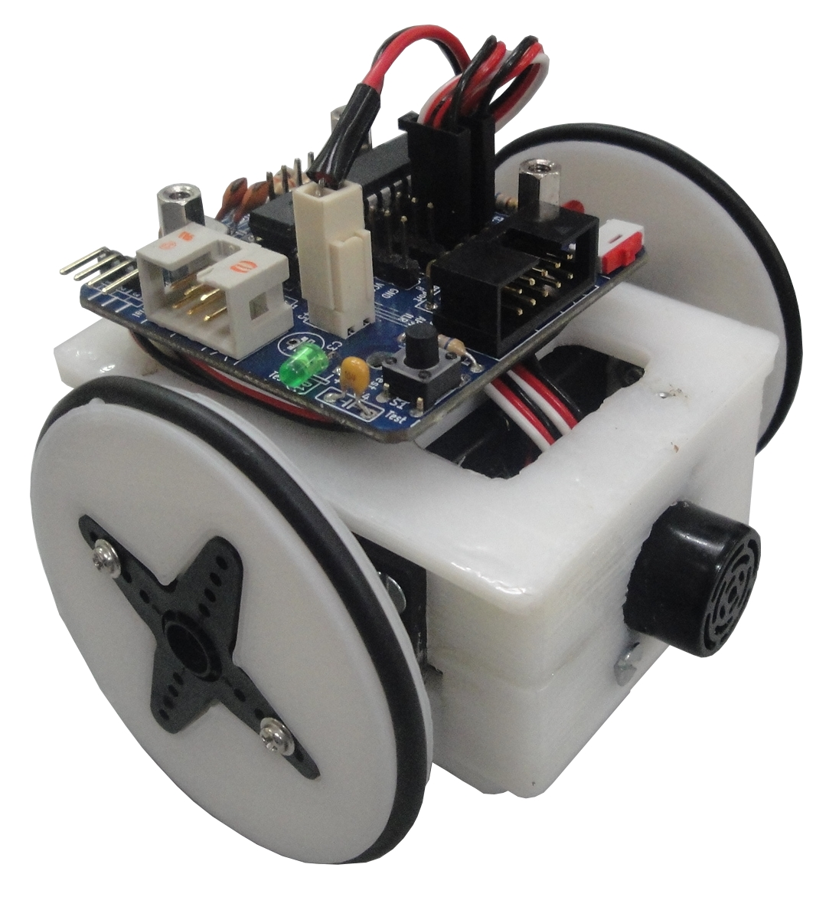
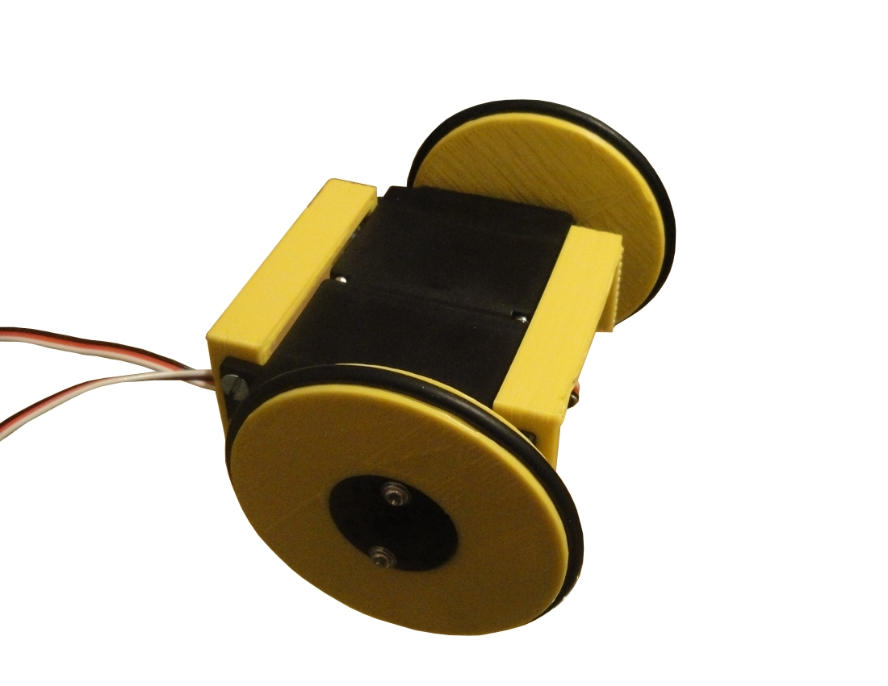
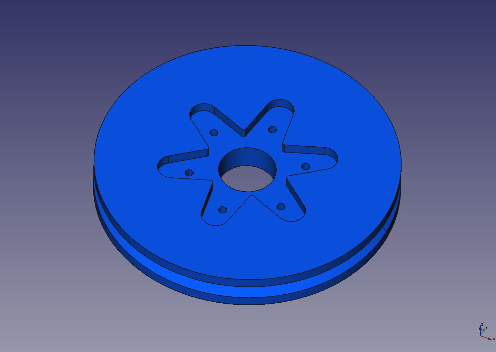
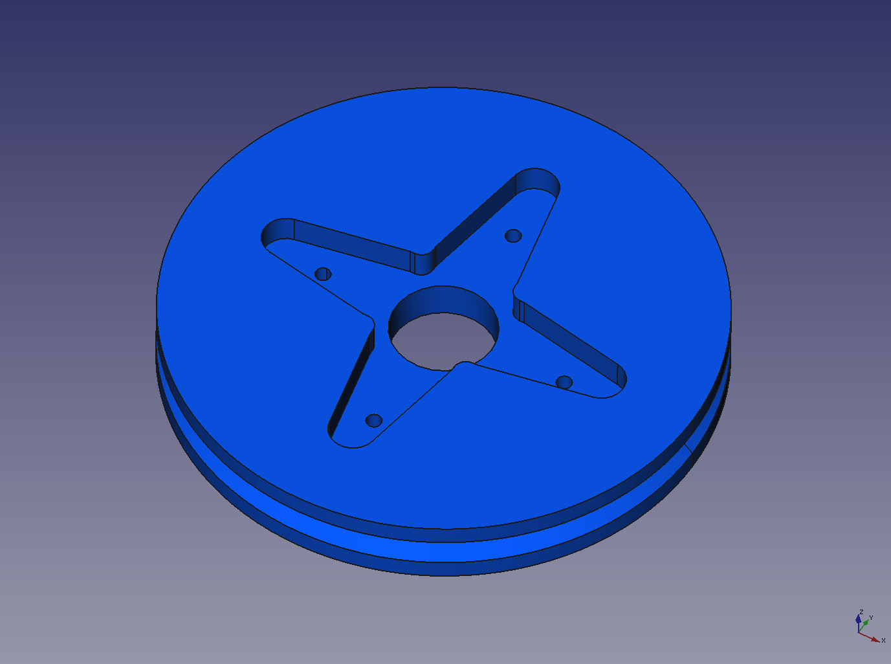
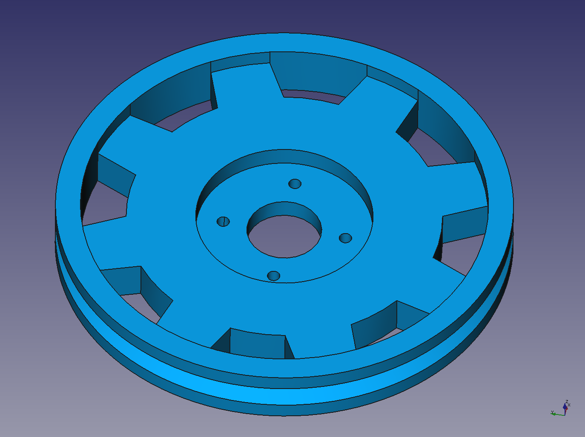
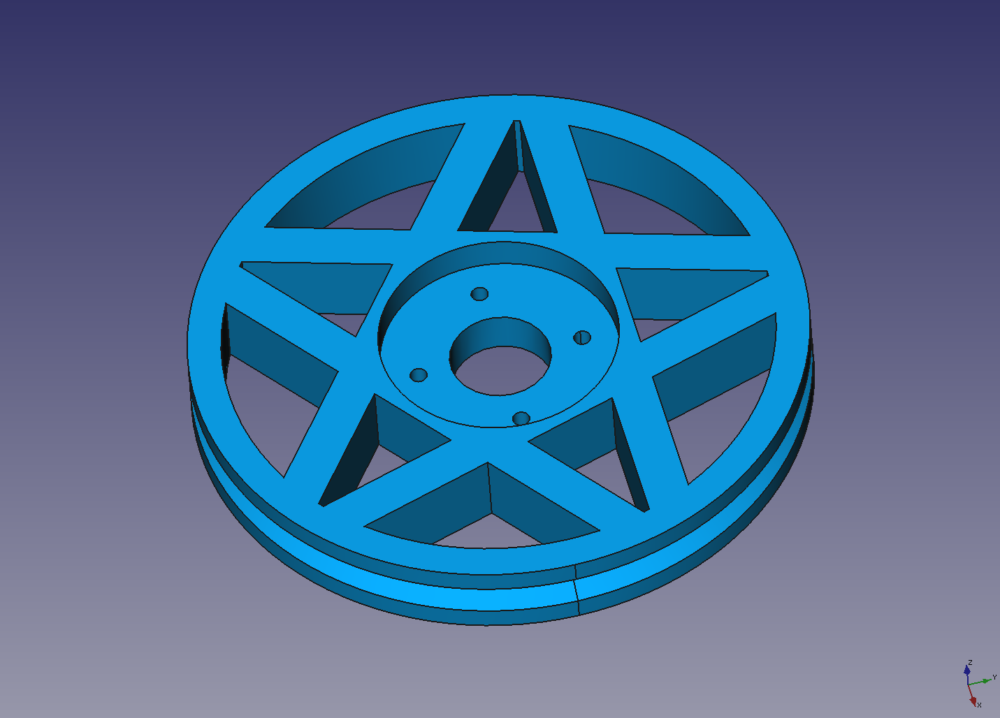
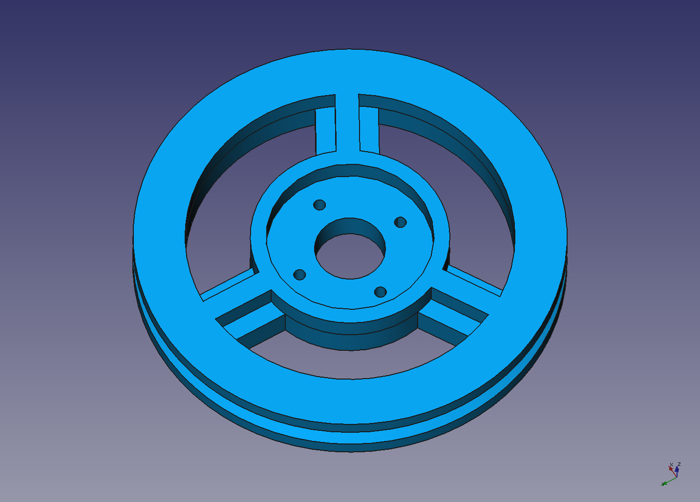
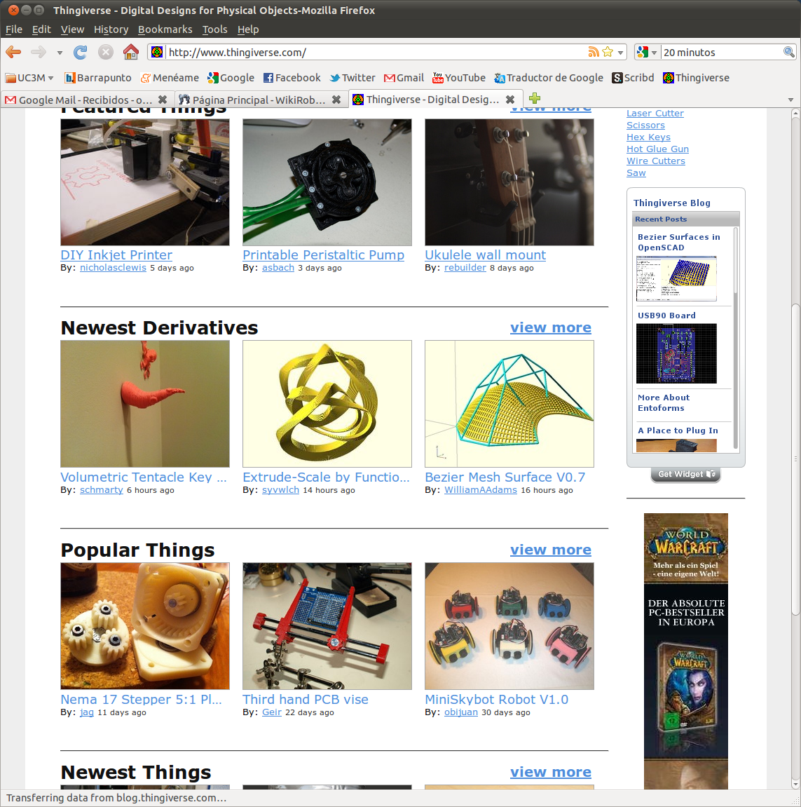

Mini-Skybot
{kind=link}
Contenido
[ocultar]Introducción
El MiniSkybot es un robot educacional libre e imprimible. Toda la información está disponible para que cualquiera lo pueda estudiar, copiar, modificar y fabricar. Además, ha sido diseñado exclusivamente usando software libre: Sistema operativo Linux, OpenScad, Frecad y Kicad. Esto garantiza que se puedan realizar diseños derivados sin tener que pagar ningún tipo de licencia o realizar copias ilegales de software privativo.
Al ser un robot “libre e imprimible“, cualquier persona lo puede bajar e imprimir. La gente que no tenga acceso a una impresora 3D, siempre le puede pedir a un amigo que la tenga que se lo imprima, o ir a un “hacklab” que sí la tenga
Prototipos
| Miniskybot 2 | Mini-Skybot v1.0 | Miniskybot v0.1 |
|---|---|---|
|  |

|
 |
Bibloteca para diseño de printbots en Freecad
Biblioteca con vitaminas y piezas impresas para el diseño de printbots
| Biblioteca printbots |
|---|
| |
Ruedas para Miniskybot
En la Biblioteca printbots están incluidos las últimas ruedas para el Miniskybot
| Corona circular | Corona circular grande | Corona de 6 brazos | Corona de 4 brazos |
|---|---|---|---|

|

|
 |
 |
| Modelo engranaje | Modelo Open Hw | Modelo pentáculo | Modelo renacuajo |
|---|---|---|---|
|  |
|
 |
 |
Fotos
| Álbum de fotos completo |
|---|
| Álbum de fotos en G+ |
|---|
{kind=link}
{kind=link}
{kind=link}
{kind=link}
Videos
| 300|250</youtube> Enlace directo al vídeo en Youtube
|
300|250</youtube> Enlace directo al vídeo en Youtube
|
Artículos
|
Historia
- Junio/2013: Miniskybot v1 aparece en la revista americana Servo magazine, de Junio/2013 (PDF con portada y pag. 46
- (Noticias pendientes)
- 24/Ene/2011: El Miniskybot de Daniel Gómez: Blog
- 22/Dic/2011: El Miniskybot de Darkomen: el primero el funcionar con una Skymega: Blog
- 31/Oct/2011: Scout: Nueva mutación del Miniskybot por Sliptonic (Missouri, USA). Publicado en thingiverse : Scout
- 20/Oct/2011: Miniskybot en Latinoware 2011: (Página en Latinoware), (Más información)
- 24/Sep/2011: El Miniskybot se muestra en el OSHWcon en Madrid (Más información)
- 13/Agosto/2011: Construcción de miniskybots en el Hackerspace Adelaide (Australia): Entrada en su Blog
- 14/Sep/2011: El minisybot se menciona en el blog de Makerbot: (Entrada)
- 02/Agosto/2011: El miniskybot se menciona en esta entrada de blog
- 24/Junio/2011: CW Kreiser ha creado este vídeo :-) (Video) (Blog)
- 20/Junio/2011: Primera "Telecopia" del Miniskybot: Mecánica, electrónica y software (por CW kreiser) (video) (blog)
- 06/Junio/2011: Miniskybot "impreso" por FUBAR LABs: Blog
- 23/Mayo/2011:
- Robot miniskybot presentado en el AMIRE 2011: 6th International Symposium on Autonomous Minirobots for Research and Edutainment, en Bielefeld, Alemania. (Blog I) (Blog II)
|  |
El Miniskybot es el tercer objeto más popular en Thingiverse |
{kind=link}
- 06/Mayo/2011 :
- Makerbot: En el capítulo 10 de su "Robot Hospital" hacen mención al Mini-skybot (minuto 0:20) (entrada en el blog de Makerbot)
- Entrada sobre el Miniskybot en paperblog
- es-robot.com se hace eco de la entrada anterior
- 05/Mayo/2011: Entrada sobre el Miniskybot en el blog de Ponoko
- 23/Abril/2011: Miniskybot v1.0 publicado en el wiki y en Thingivese
- (inicios) Pendiente
Repositorio
- Repositorio SVN: http://svn.iearobotics.com/Mini_Skybot
Para obtener la última teclear:
svn co http://svn.iearobotics.com/Mini_Skybot/v1.0/
Licencia
| |

|
Autores
Enlaces
Noticias
- 10/Sep/2014: Añadido enlace a la Biblioteca printbots. Añadido el catálogo de ruedas disponibles
- 23/Abril/2011: (Blog) Añadida documentación del Miniskybot V1.0
- 02/Enero/2011: Añadidas fotos de la versión 1.0
- 27/Nov/2010: Comenzada esta página